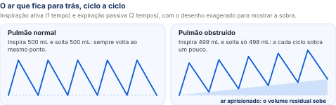
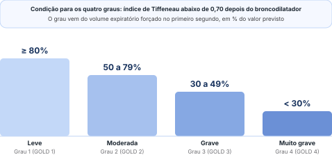

Brônquio: obstrução
Inflamação crônica e remodelamento. A parede fica mais grossa e a luz, mais fechada. Entra menos ar.
A obstrução que não volta e o paciente que precisa ser visto por inteiro: definição, fisiopatologia, diagnóstico, classificação, tratamento e exacerbação.
Organizada a partir da transcrição da aula, com os erros da transcrição automática corrigidos e a linguagem ajustada. A legenda de cores está na página 2.
Ele disse com todas as letras só o que não cobra: os medicamentos. Não disse o que cai. O que ele mais repetiu na aula: a espirometria confirma a obstrução, mas não define o tratamento; o volume do primeiro segundo mostra a gravidade e não pode cair; e o paciente não pode exacerbar.
“Então vocês podem ficar tranquilos quanto aos medicamentos na prova.”
A doença pulmonar obstrutiva crônica é uma doença pulmonar comum, que pode ser prevenida e que tem tratamento, mas não tem cura. Ela é marcada por sintomas respiratórios crônicos e por uma limitação do fluxo de ar que persiste: a obstrução não volta ao normal.
As alterações ficam em dois lugares: nas vias aéreas, onde o brônquio inflama e fecha, e nos alvéolos, que se rompem. Quase sempre há exposição a partículas ou gases nocivos. Fatores do próprio paciente também pesam no risco e na forma como a doença aparece, como a deficiência de alfa-1 antitripsina e alterações no desenvolvimento normal do pulmão.
GINA e GOLD são os nomes, em sigla do inglês, dos consensos internacionais de cada doença: a Iniciativa Global para a Asma e a Iniciativa Global para a Doença Pulmonar Obstrutiva Crônica. Os graus de gravidade (seção 04) aparecem nas provas como “GOLD 1 a 4”.
Antigamente se falava em enfisema ou em bronquite crônica. Hoje as duas ficam dentro da doença pulmonar obstrutiva crônica, mas continuam existindo: há pacientes mais bronquíticos, outros mais enfisematosos, e o mesmo paciente pode ter as duas.
Tosse com expectoração por pelo menos três meses no ano, em dois anos seguidos. Pode existir junto com graus diferentes de enfisema e de obstrução.
Aumento permanente dos espaços aéreos depois dos bronquíolos terminais, com destruição das paredes dos alvéolos e sem fibrose evidente. É o pulmão com bolhas.
Em aula, o professor citou o tipo do paciente enfisematoso, “aquele que respira sentado” (o trecho ficou pouco claro no áudio).
Os livros descrevem dois tipos clássicos. O soprador rosado (mais enfisematoso) é magro, respira com esforço, sentado e inclinado para a frente, com os lábios semicerrados, e tem pouca cianose. O inchado azulado (mais bronquítico) tem muita tosse e secreção, cianose e edema. Na prática, a maioria fica entre os dois.
Um senhor de 80 anos que nunca fumou pode ter enfisema senil. Não fumou, mas tem enfisema: o fator, nesse caso, é o próprio envelhecimento.
A pessoa fuma por anos, ou respira um poluente no trabalho ou em casa. A fumaça chega ao brônquio, que fica inflamado, inflamado, ao longo de anos. Com o tempo, o brônquio se remodela, a parede engrossa e a luz vai fechando: é a obstrução.
Na respiração normal, a inspiração é ativa (a musculatura contrai e o ar entra) e a expiração é passiva (a musculatura relaxa e o ar sai). A relação entre o tempo de inspirar e o de expirar é de 1 para 2. Quem inspira 500 mL solta 500 mL.
Com o brônquio fechado, falta tempo. Se o paciente tivesse cinco minutos para inspirar, talvez puxasse os 500 mL, mas ele não tem. Puxa 499 mL; na expiração, que é passiva, solta só 498 mL. A cada ciclo sobra um pouquinho, e esse ar vai para o volume residual, que aumenta.

Os alvéolos recebem mais ar do que conseguem esvaziar, se distendem e acabam se rompendo. O parênquima pulmonar fica cheio de bolhas de enfisema.
A doença tem um lado no brônquio e outro no parênquima. Os dois somam para piorar a troca de gases.
Inflamação crônica e remodelamento. A parede fica mais grossa e a luz, mais fechada. Entra menos ar.
Alvéolos rompidos e bolhas de enfisema. A área que troca gases se perde.
Resultado: a saturação de oxigênio cai, e o paciente tem uma dispneia que piora devagar, ao longo de anos, às vezes com uma tosse. É o paciente que anda na rua com a doença.
A dispneia da doença é crônica e progressiva: vem com o tempo, não de uma hora para outra. Junto vêm tosse, secreção e uma limitação cada vez maior para as atividades do dia a dia.
“Piorei há uns dez dias.” “Mas quando começou?” “Ah, falta de ar eu tenho faz tempo... uns dois anos.” A falta de ar é antiga. Não é a dispneia súbita, que acorda o paciente, como na embolia pulmonar vista em aula anterior.
As comorbidades mudam os sintomas, a qualidade de vida, as internações e a mortalidade. Um paciente com a doença que também é diabético, está obeso, ficou ansioso ou deprimido não tem uma doença única.
Nos anos 1990, no estágio de pneumologia, não havia espirometria. Chegavam muitos pacientes de cidades vizinhas tomando aminofilina (para o pulmão) e digoxina (para o coração) ao mesmo tempo, porque não dava para saber se era insuficiência cardíaca ou a doença pulmonar. Até hoje ele atende muito paciente com insuficiência cardíaca que acha que tem a doença pulmonar, ou que está exacerbado.
As duas podem coexistir. O tamanho da resposta ao broncodilatador, sozinho, não separa uma da outra: não é porque reverteu que é asma, nem porque não reverteu que é a doença pulmonar obstrutiva crônica.
Nos congressos, nas sessões dos laboratórios na hora do almoço, sempre há dois palestrantes discutindo um caso: “é asma ou é a doença pulmonar obstrutiva crônica?”. Até para especialista essas nuances são difíceis.
O exame que confirma o diagnóstico é a espirometria, já vista em aula anterior. O padrão é obstrutivo, e o diagnóstico exige duas coisas juntas: um contexto clínico compatível (tabagismo ou exposição, dispneia crônica e progressiva, tosse, cansaço, dificuldade nas atividades) e a demonstração de uma obstrução que persiste.
Índice de Tiffeneau: volume expiratório forçado no primeiro segundo dividido pela capacidade vital forçada, medido depois do broncodilatador.
Antes do broncodilatador o índice já está abaixo de 0,70. Depois do broncodilatador, ele continua abaixo de 0,70: a obstrução não reverte. Na aula, o professor citou a melhora de 12% ou mais como resposta ao broncodilatador, que não aparece nesse paciente.
O critério clássico de resposta ao broncodilatador pedia aumento do volume do primeiro segundo de 12% e de 200 mL. A padronização internacional de 2022 passou a usar aumento maior que 10% do valor previsto. Em qualquer dos dois, a resposta sozinha não separa asma da doença pulmonar obstrutiva crônica.
Pela versão 2026 do GOLD, quando o índice depois do broncodilatador cai nessa faixa, vale repetir o exame para confirmar.
Ou seja, não é ver 0,68 e fechar o diagnóstico. A interpretação considera a idade, os sintomas e a qualidade técnica do exame.
Para fazer a espirometria, o paciente inspira profundamente, enche o pulmão, sopra todo o ar de uma vez dentro do aparelho e depois puxa o ar de volta, enchendo de novo. Ele precisa entender o exame e colaborar.
O resultado é comparado a uma tabela, dentro do computador, com o que se espera de uma pessoa do mesmo sexo, idade e altura. No exemplo da aula, a capacidade vital forçada prevista era de 5.200 mL e o volume do primeiro segundo previsto, de 4.800 mL; o paciente soprou valores próximos, dentro do normal.
É o volume de ar que o paciente consegue soprar no primeiro segundo da expiração forçada. É ele que diz se a obstrução é leve, moderada, grave ou muito grave.
Com todo o tempo do mundo, qualquer mangueira enche o balde. Com um segundo só, a mangueira grossa enche 200 mL e a fininha, uns 10 mL. O pulmão obstruído é a mangueira fininha: com tempo, até esvaziaria, mas ele tem no máximo uns seis a oito segundos, e é o primeiro segundo que mostra a obstrução.

Quanto mais fechado o brônquio, menor o volume do primeiro segundo e mais grave a doença. Ao longo da vida, o paciente vai perdendo esse volume. O objetivo do tratamento é que ele não caia: é o indicador da gravidade.
A condição para ter a doença é a mesma em todos os graus: índice de Tiffeneau abaixo de 0,70 depois do broncodilatador. O grau vem do volume do primeiro segundo. Mas o tratamento não sai da espirometria: sai da clínica (seção 05).
“Na espirometria a gente consegue ver a obstrução do paciente, mas a gente não consegue ver o paciente.”
Um senhor de 80 e poucos anos, ex-tabagista, ia fazer uma prostatectomia. Ao deitar na posição da cirurgia, ficou cianótico e com falta de ar, e a cirurgia foi suspensa. O professor tratou, e o cirurgião “quase o matou” por adiar. Depois de uns 20 dias, a nova espirometria estava igual à anterior. Mas o paciente desistiu da cirurgia: tinha melhorado tanto que estava até pensando em arrumar namorada. A obstrução não mudou; a melhora foi clínica.
O contrário também acontece: paciente muito sintomático com espirometria normal para a idade. Nos dois casos, a pergunta é a mesma.
“Cadê o paciente? Cadê a clínica dele?”
Essa classificação não estava nos slides do ano passado, e ele resolveu colocar. “Eu não gosto dessa decoreba para vocês, mas infelizmente não tem jeito.” O especialista usa no dia a dia; para o clínico, precisa ser explicada.
A classificação é clínica e escolhe o tratamento inicial (seção 07). Os sintomas podem ser medidos por uma de duas ferramentas: a escala de dispneia mMRC, que vai de 0 a 4, ou o questionário CAT, uma entrevista com perguntas pontuadas de 0 a 40. Usa-se uma ou outra.
“Como é que faz a diferença?” São três grupos. Se exacerbou, é E. Se não, vê os sintomas na tabela de dispneia: quem não tem nada de dispneia é 0, leve é 1, e assim até 4. Com 0 ou 1, é A; com 2 ou mais, é B. O questionário CAT funciona do mesmo jeito: perguntas que você faz, pontua e classifica.
A espirometria confirma e gradua a obstrução. Os sintomas e as exacerbações escolhem o tratamento.
Existe a doença? Qual é o grau da obstrução, de 1 a 4?
Quanto sintoma o paciente tem? Ele exacerba? Qual tratamento começar?
Pedida para quase todos. Mostra as cúpulas do diafragma retificadas, os espaços intercostais aumentados e outras lesões que valem ser vistas.
Ver bolhas de enfisema e se têm risco de romper; avaliar o paciente exacerbado com febre; rastrear câncer de pulmão, dentro dos critérios definidos pela sociedade de pneumologia.
Quando uma bolha de enfisema rompe a pleura, o paciente faz um pneumotórax. Passar dreno não resolve: a bolha continua dentro do pulmão, o ar continua entrando nela e o problema não melhora. O tratamento é cirúrgico, grampeando e retirando a bolha.
Houve uma época em que se quis usá-la como exame do diagnóstico. Mas pouquíssimos lugares têm o aparelho, e fazer para todo mundo, principalmente no Sistema Único de Saúde, não era viável.
Há uns 15 ou 20 anos, uma apresentadora de televisão contou que tinha câncer de pulmão, e o médico dela disse no programa que todo fumante deveria fazer tomografia de tórax. Virou um carnaval: todo mundo queria a tomografia. Com o tempo, a sociedade de pneumologia definiu critérios para o rastreamento.
A família de uma senhora com enfisema, de outra cidade, chegou numa segunda-feira: ela estava com falta de ar desde sexta, usando mais as bombinhas, sem melhorar. No exame: pressão baixa e frequência cardíaca de 160, totalmente arrítmica. Era fibrilação atrial. Exacerbou, sim, mas por causa do coração. Por isso, quando ligam dizendo “o pai está com falta de ar”, ele pede que procurem um médico na cidade para pelo menos medir a pressão e a frequência cardíaca.
É um teste funcional, de avaliação, e não de diagnóstico. Simples e tranquilo de fazer, ele muitas vezes traz a pista que faltava.
Abaixo de 90% em repouso, caminhar com oxigênio. Queda maior que 4 pontos na caminhada é dessaturação.
Na reabilitação pulmonar, com fisioterapeuta, o teste pode ser repetido em três ou seis meses para medir a melhora: anda mais, dessatura menos, a pressão não sobe, a escala de Borg melhora.
O relógio. Uma paciente chegou dizendo que o relógio marcava saturação abaixo de 90% por 5 a 7 minutos à noite. Podia ser apneia do sono ou doença pulmonar. No teste de caminhada, ela manteve a saturação, sem subir a pressão nem a frequência cardíaca.
A histerectomia. Uma mulher de 38 anos, que nunca fumou, começou com falta de ar 15 a 20 dias depois de uma histerectomia. Investigaram, internaram e trataram como ansiedade e depressão. Três meses depois, no teste de caminhada, a saturação foi de 97% para 90% e a frequência cardíaca, de 80 para 140. Isso não é ansiedade: a angiotomografia mostrou embolia pulmonar.
Cada exacerbação derruba um pouco o volume do primeiro segundo, e é ele que define o grau da doença.
Uma crise de piora, que pode se repetir.
O volume do primeiro segundo diminui a cada crise.
Passa, por exemplo, de moderado (grau 2) para grave (grau 3).
“Eu não quero que esse paciente exacerbe de jeito e maneira.”
“Você trouxe a sua bombinha? Usa aqui para mim, para eu ver como é que você está usando.”
A escolha do dispositivo considera a técnica, a capacidade do paciente, a preferência dele, os recursos e a disponibilidade. Ele tem fluxo inspiratório suficiente para o pó? Consegue apertar o spray e inspirar ao mesmo tempo? O correto, e ético, é mostrar as opções e oferecer aquela com que ele melhor se adapta.
![Algoritmo: 1. O paciente teve exacerbação? Se não, 2. Quanto sintoma ele tem, pela escala de dispneia mMRC (0 a 4) ou questionário CAT (0 a 40): mMRC 0 ou 1 é grupo A, com pouco sintoma e sem exacerbação, e usa um broncodilatador; mMRC 2 ou mais é grupo B, com mais dispneia e sem exacerbação, e usa dois broncodilatadores de longa ação, beta-2 agonista mais antimuscarínico, juntos. Se sim, é grupo E, exacerbador, já é E, ponto final: contar eosinófilos no sangue para decidir o corticoide inalatório; usa os mesmos dois de longa ação, e com eosinófilos de 300 ou mais, considerar somar o corticoide inalatório (terapia tripla).](fig-algoritmo.svg)
Os broncodilatadores de longa ação são de dois tipos: o beta-2 agonista e o antimuscarínico. Juntos, eles produzem mais broncodilatação do que cada um sozinho.
Há uns cinco anos, era corticoide para todo mundo: tiravam, voltavam, ninguém sabia o que fazer. Hoje há orientações claras, baseadas nos eosinófilos do sangue e nas exacerbações. Quanto mais eosinófilos, maior a chance de o corticoide prevenir exacerbações.
No grupo E, ao começar; ou no paciente que continua exacerbando já com os dois de longa ação.
“O corticoide é uma decisão clínica, não é um degrau.”
O asmático, muitas vezes, convive com a doença desde criança: já conhece a falta de ar e os aparelhos. O paciente com doença pulmonar obstrutiva crônica começa a ter sintomas aos 60 anos. Às vezes é a esposa de um casal de fumantes: o marido morreu há dois ou três anos, e agora ela começa a ter a mesma falta de ar que ele teve. Ela fica ansiosa, deprimida, e isso não pode ser ignorado.
Diferente do asmático, que troca muito de médico, esse paciente volta sempre para o mesmo médico: mesmo quando interna e outro colega cuida dele no hospital, depois da alta ele volta. É preciso entender por que ele está com falta de ar e estar acessível: quando ele liga no consultório com falta de ar, não existe “não venha”.
Há uns 20 anos, um paciente estava em crise, segurando na cama: “eu não respiro, não respiro”. Ainda não havia ventilação não invasiva. O professor sentou ao lado dele e disse: “Eu estou aqui, não vou embora enquanto você não melhorar, pode ficar tranquilo.” Com inalação, medicação e o médico ao lado, em uma hora e pouco ele saiu da crise. Era muito de ansiedade: “estou com falta de ar, vou morrer, vou sufocar”.
O tratamento é individualizado e reavaliado o tempo todo, mesmo quando o paciente volta bem.
A dispneia piorou? Exacerbou no período: precisou de mais remédio, antibiótico, hospital, corticoide, outro médico?
Técnica, adesão, exposições, comorbidades (diabetes, hipertensão, embolia recente), vacinas e oxigênio.
Escalonar; trocar dispositivo ou molécula (fluticasona por budesonida); descalonar, tirando o corticoide de quem não exacerba mais.
O paciente vinha bem e, de repente, algo aconteceu: uma infecção, uma mudança de temperatura, uma fibrilação atrial, uma embolia pulmonar. É como o hipertenso cuja pressão dispara ou o diabético que faz hiperglicemia. Ele exacerbou: teve uma crise de piora dos sintomas.
Piora da dispneia, da tosse e da expectoração ao longo de alguns dias. Pode vir com taquipneia e taquicardia.
Está muitas vezes ligada a infecção respiratória, poluição ou outras agressões às vias aéreas. Quando o paciente chega exacerbado pela primeira vez, primeiro se trata a exacerbação e, depois que ele melhora, a doença de base, que nunca tinha sido tratada.
“Agora piorei muito da falta de ar, a secreção aumentou, e era clarinha e agora está amarelada.”
Piorou a falta de ar.
Aumentou o volume da secreção.
A secreção mudou de cor: de clara para amarelada.
Exacerbou por quê? Por uma arritmia, uma embolia pulmonar, uma insuficiência cardíaca. Se for por sinusite ou pneumonia, tudo bem, mas antibiótico não é indicado para toda exacerbação.
O ex-tabagista que chega com pneumotórax não está exacerbado: fez um pneumotórax, e não vai ser tratado como exacerbação.
A gravidade depende das características clínicas e fisiológicas do paciente: intensidade da dispneia, frequência respiratória, frequência cardíaca, estado mental, oxigenação e sinais de insuficiência respiratória. Gasometria, radiografia, eletrocardiograma e exames de laboratório entram conforme a realidade do serviço e o diagnóstico diferencial. E é preciso procurar cedo os sinais de que ele vai precisar de suporte ventilatório.
Corticoide sistêmico nas moderadas a graves; antibiótico nos selecionados.
Ele ainda vê paciente tomando 40, 60 mg de corticoide, com redução aos poucos por 15 dias. “Pelo amor de Deus!” Esse paciente já tem outras doenças: o corticoide pode alterar a glicemia e a pressão e causar miopatia, com mais fraqueza muscular.
O esquema mais citado pelo consenso é prednisona 40 mg por dia por cinco dias. Os três sinais são conhecidos como critérios de Anthonisen: o antibiótico entra com os três, com dois quando um deles é a secreção purulenta, ou quando o paciente precisa de ventilação. No oxigênio, o alvo usual é saturação entre 88% e 92%.
Na alta, não basta dizer “continua com o seu remédio”. Primeiro: por que ele exacerbou? A partir disso, retomar a manutenção e prevenir a próxima crise.
O caso. Homem de 75 anos, tabagista de 80 maços-ano, parou de fumar há dois anos. Tem dispneia há dois anos, que vem progredindo; nos últimos dois meses, aos pequenos esforços. Há dez dias piorou: dispneia até em repouso, tosse, secreção amarelada e chiado. Perdeu 5 kg em dois meses. No exame: saturação de 86%, frequências respiratória e cardíaca elevadas (valores pouco claros no áudio), murmúrio vesicular globalmente diminuído, sibilos esparsos e nenhum edema de membros inferiores.
90% equivale a cerca de 60 mmHg de pressão de oxigênio no sangue arterial. Abaixo disso, hipoxemia.
Perda de peso sem explicação em fumante pesado pede investigação de câncer de pulmão, que está entre as comorbidades da doença. E a espirometria para confirmar o diagnóstico é feita com o paciente estável, fora da exacerbação.
Os pacientes A e B têm o mesmo índice de Tiffeneau depois do broncodilatador: 0,55. Os dois têm obstrução e, aparentemente, a doença. Vão receber o mesmo tratamento? Não: o tratamento não se faz pela espirometria, e sim pela clínica. Para classificar em A, B ou E, é preciso saber quem é cada um.
“Que pergunta fazer? Quem é esse paciente?”